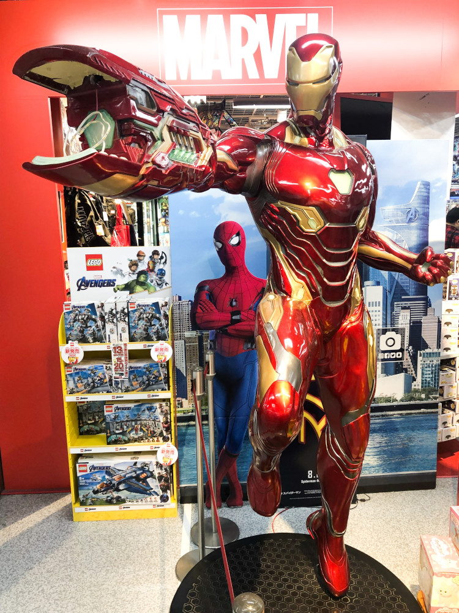

Billionaire Tony Stark was abducted and forced to create more lethal weapons. Instead, he developed an armored suit, escaped from captivity, and eventually developing a more powerful armor, swearing to defend the world as Iron Man.
Tony Stark, who has inherited the defense contractor Stark Industries from his late father Howard Stark, is in war-torn Afghanistan with his friend and military liaison, Lieutenant colonel James Rhodes, to demonstrate the new "Jericho" missile. After the demonstration, the convoy is ambushed and Stark is critically wounded by a missile used by the attackers: one of his company's own. He is captured and imprisoned in a cave by a terrorist group called the Ten Rings. Yinsen, a fellow captive doctor, implants an electromagnet into Stark's chest to keep the shrapnel shards that wounded him from reaching his heart and killing him. Ten Rings leader Raza offers Stark freedom in exchange for building a Jericho missile for the group, but he and Yinsen know that Raza will not keep his word. Stark and Yinsen secretly build a small, powerful electric generator called an arc reactor to power Stark's electromagnet and a prototype suit of powered armor to aid in their escape. Although they keep the suit hidden almost to completion, the Ten Rings discover their hostages' intentions and attack the workshop. Yinsen sacrifices himself to divert them while the suit powers up. The armored Stark battles his way out of the cave to find the dying Yinsen, then burns the Ten Rings' weapons and flies away, crashing in the desert and destroying the suit. After being rescued by Rhodes, Stark returns home and announces that his company will cease manufacturing weapons. Obadiah Stane, his father's old partner and the company's manager, advises Stark that this may ruin Stark Industries and his father's legacy. In his home workshop, Stark builds a sleeker, more powerful version of his improvised armor suit as well as a more powerful arc reactor for it and his chest. Personal assistant Pepper Potts places the original reactor inside a small glass showcase. Though Stane requests details, a suspicious Stark decides to keep his work to himself.
